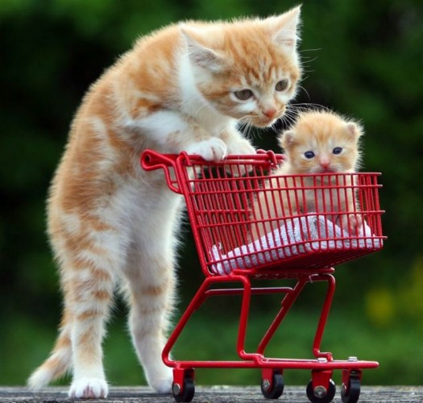

Jesteśmy ogólnopolską platformą adopcyjną, która poprzez stronę internetową umożliwia znalezienie czworonożnego przyjaciela potrzebującego domu, a następnie jego adopcję. Baza obejmuje kilkdziesiąt psów i kotów ze schronisk w Polsce i sukcesywnie będzie się powiększać.
Naszym celem jest pomoc w znalezieniu domów dla jak największej liczby psów i kotów przebywających w schroniskach w Polsce. Obecnie informacje o czworonogach do adopcji są rozproszone w wielu miejscach, a dzięki naszej platformie ADOPTUJ mogą znaleźć się na jednej wspólnej stronie internetowej. Dla schronisk to możliwość dotarcia z informacją o zwierzętach szukających rodziny do potencjalnych opiekunów na terenie całej Polski.
Platforma zawiera również sekcję poradniczą w zakresie szeroko pojętej adopcji i opieki nad zwierzętami. Można tam znaleźć wiele porad mających na celu pomoc osobom rozważającym adopcję np. psa, w podjęciu odpowiedniej decyzji.
W sekcji blog znajdują się artykuły, które w przyjazny sposób przybliżają temat adopcji zwierząt ze schronisk oraz uczą, jak ją przeprowadzić w sposób optymalny zarówno dla zwierzęcia, jak i nowego właściciela. Szanse na adopcję zweryfikuje schronisko, w którym przebywa zwierzę.
Funkcjonalność platformy ADOPTUJ umożliwia potencjalnemu właścicielowi m.in. wyszukanie psa lub kota o określonych kryteriach, takich jak wiek i płeć. Po wybraniu czworonożnego przyjaciela, można skontaktować się bezpośrednio ze schroniskiem, które zadecyduje o dalszym procesie adopcji.
Platforma ADOPTUJ jest dostępna poprzez stronę www, a wkrótce również poprzez aplikację mobilną dedykowaną na systemy: iOS, Android oraz Windows Mobile.
Dodatkową funkcją naszej platformy jest edukacja i zachęcanie do przyjmowania odpowiedzialnych postaw wobec zwierząt w procesie podejmowania decyzji o adopcji, jak i w codziennym życiu z pupilem.
Jest to element dopełniający całą ideę naszej pracy, dzięki któremu właściciel czworonożnego przyjaciela będzie mógł wejść w nowy rozdział swojego życia z pełną wiedzą na temat tego, jak odpowiedzialnie opiekować się swoim pupilem.